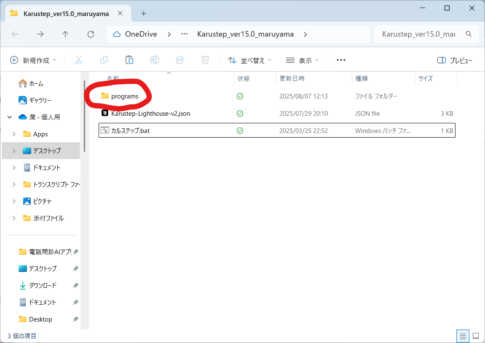

アップデートは、初回インストール時と同じダウンロードサイトから最新版のファイルをダウンロードしていただく形となります。
認証番号やAPIキーなどの情報はパソコン内に保存されているため、新しいバージョンを起動すればそのままご利用いただけます。アップデートのたびに再度登録し直す必要はございません。
新たなホワイトリスト登録は不要です。
オンプレミス環境などの制限で直接ダウンロードサイトを開けない場合は、外部の端末でアップデートファイルをダウンロードしてください。
ダウンロードしたファイルをUSBメモリなどを用いて移し、該当のパソコンにインストールし直していただく必要がございます。
セキュリティ向上のため、v24.0以降でスプレッドシート出力のプログラムが変更され、「Azure Function Key」の項目が追加されました。
そのため、v24.0以前のバージョンをご利用いただいていた端末では、アップデート後にこちらのキー（Azure Function Key）の追加入力が必要となります。
アップデート通知が表示された場合でも、その内容が現在お使いの機能に影響しない場合は、必ずしも更新していただく必要はございません。
「いいえ」をクリックしていただければ、1ヶ月間は通知が表示されなくなります。
💡 各バージョンの変更内容は 変更履歴ページ をご確認ください。
⚠ ご注意： ご自身でカスタマイズ・作成したオリジナルのシステムプロンプトがある場合、そのままアプリを新しいバージョンに入れ替えるとデータが消えて（初期化されて）しまいます。

programs フォルダがあります
programs フォルダに移動します。programs フォルダに、コピーしたファイルを追加（置き換え）してください。programs フォルダ内にある dictionary.txt をコピーします。programs フォルダ内に入れて置き換えることで、登録した補正辞書を引き継ぐことができます。📁 フォルダ構成イメージ
Karustep_v32.5/ ├─ Karustep.bat ├─ Karustep-Lighthouse-v2.json └─ programs/ ├─ dictionary.txt ← 補正辞書はここ ├─ 00. プロブレムリスト形式v2.txt ← 自作プロンプトはここ ├─ 01. 簡潔なSOAP形式.txt └─ ...
ご不明な点がございましたら、お気軽にお問い合わせください。